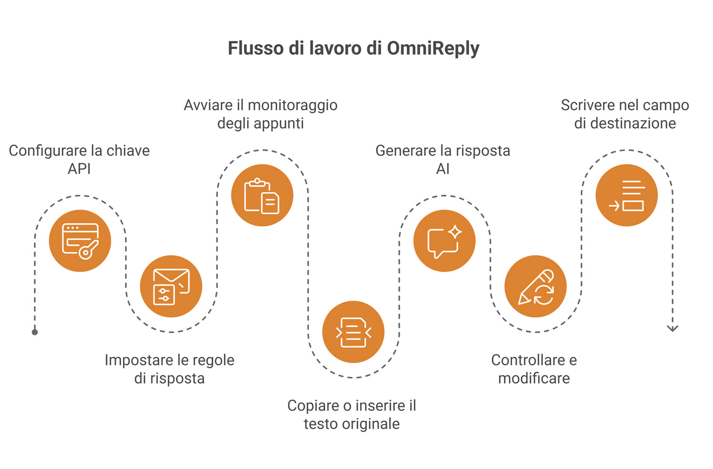
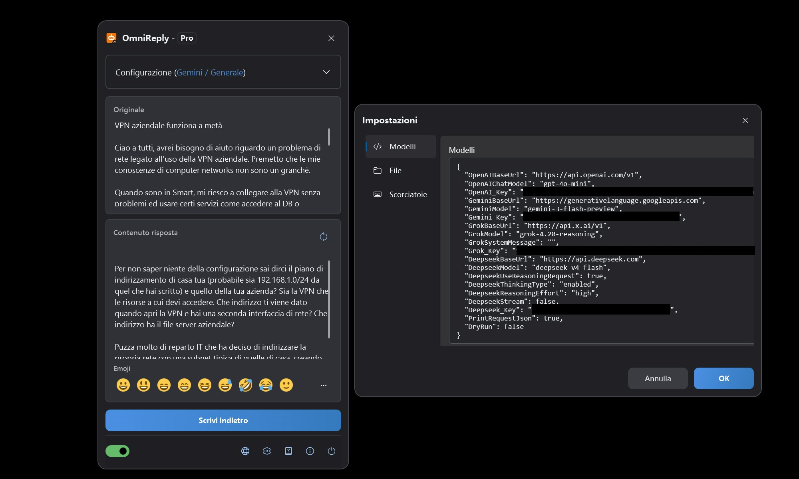
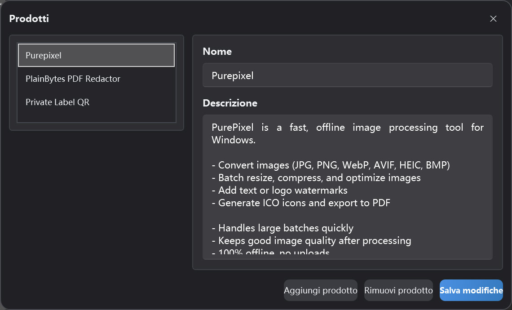

Assistente AI alle risposte basato sugli appunti
Guida utente OmniReply
Questa guida spiega l'interfaccia di OmniReply, la configurazione iniziale, la generazione delle risposte AI e la scrittura nel campo di destinazione. Inizia dalla sezione Avvio rapido e torna ai dettagli delle funzionalità quando ti serve più contesto.
1. Conoscere OmniReply
OmniReply riduce la distanza tra la lettura di un messaggio e la stesura di una risposta ponderata. Ti aiuta a catturare il testo di origine, generare una bozza, controllarla e digitarla nel campo di destinazione.
1.1 Cos'è OmniReply
OmniReply è un assistente AI per le risposte su Windows. Monitora il testo copiato, lo combina con il modello, la scena, la lingua, lo stile, l'obiettivo e la lunghezza della risposta che hai selezionato, quindi genera una risposta modificabile. Dopo aver controllato la bozza, puoi scriverla nel campo di input di un'altra app.
1.2 Casi d'uso comuni
Risposte sui social
Prepara risposte naturali per commenti, messaggi, post e conversazioni in community.
Assistenza clienti
Trasforma le domande degli utenti in spiegazioni chiare, rassicurazioni, passi successivi o risposte di supporto.
Raccomandazioni di prodotti
Usa le informazioni sui prodotti per creare raccomandazioni concise, spiegazioni delle funzionalità e risposte comparative.
1.3 Flusso di lavoro di base

2. Panoramica di interfaccia e funzionalità
La maggior parte del lavoro quotidiano avviene nella finestra principale flottante. Le finestre Impostazioni e Gestione prodotti servono soprattutto per la configurazione.
2.1 Finestra principale
| Area | Funzione | Suggerimento |
|---|---|---|
| Barra del titolo | Mostra il nome dell'app e l'edizione corrente. La finestra può essere ridotta alla sfera flottante. | Riduci la finestra quando vuoi tenerla fuori mano in attesa del testo copiato. |
| Area Configurazione | Seleziona modello, scena, lingua, stile, obiettivo, lunghezza e prodotto. | Dopo aver cambiato le regole, rigenera la risposta per applicare le nuove impostazioni. |
| Area testo di origine | Mostra il testo catturato dagli appunti e accetta anche l'inserimento manuale. | Usala quando la copia è scomoda o quando vuoi modificare prima il testo di origine. |
| Area risposta | Mostra la risposta AI generata e consente di modificarla. | Controlla sempre fatti, tono e contenuti sensibili prima di scrivere indietro. |
| Barra emoji | Inserisce emoji comuni nella risposta. | Le emoji inserite sono caratteri di testo e possono essere modificate o eliminate. |
| Barra di stato | Controlla il monitoraggio appunti, la lingua, Impostazioni, Informazioni ed Esci. | Attiva il monitoraggio appunti prima di usare il flusso di cattura automatica. |

2.2 Stato della sfera flottante
Quando è ridotta, OmniReply diventa una sfera flottante. Puoi trascinarla, fare doppio clic per espandere la finestra principale e capire lo stato del servizio dal suo aspetto. Una sfera colorata indica che il monitoraggio appunti è attivo. Una sfera grigia indica che il monitoraggio è disattivato. In attesa di una risposta AI, la sfera può mostrare anche uno stato di richiesta in corso.
2.3 Finestra Impostazioni
Impostazioni modello
Gestisci chiavi API, URL di base e nomi modello per OpenAI, Gemini, Grok e DeepSeek.
Impostazioni di rete
Attiva un proxy HTTP manuale quando necessario. Se disattivato, OmniReply usa la configurazione proxy di sistema.
Impostazioni scorciatoie
Modifica le scorciatoie globali per mostrare la finestra, attivare o disattivare il monitoraggio, aggiornare e scrivere indietro.
Impostazioni file
Scegli la cartella della cronologia. Se non selezioni una cartella, la cronologia non viene salvata.
2.4 Gestione prodotti
La gestione prodotti memorizza nomi e descrizioni dei prodotti per il profilo corrente. Quando l'obiettivo della risposta è una raccomandazione di prodotto, la descrizione del prodotto selezionato viene inviata come contesto, così la risposta generata può menzionare il prodotto con maggiore precisione.

3. Avvio rapido
Segui questi passaggi al primo utilizzo. In seguito, il flusso quotidiano di solito si limita a copiare, controllare e scrivere indietro.
Aggiungi una chiave API
Apri Impostazioni e inserisci la chiave API del servizio AI che vuoi usare. I provider non utilizzati possono restare vuoti. Il modello attualmente selezionato deve avere una chiave valida.
Imposta le regole di risposta
Scegli modello, scena, lingua, stile, obiettivo e lunghezza della risposta. Se stai preparando una raccomandazione di prodotto, seleziona anche il prodotto pertinente.
Avvia il monitoraggio appunti
Attiva l'interruttore del monitoraggio appunti nella barra di stato oppure premi Ctrl + Shift + X.
Copia o inserisci il testo di origine
Copia una domanda, un commento o un messaggio da un'altra app. Puoi anche digitare o incollare il testo direttamente in OmniReply e rigenerare manualmente.
Genera una risposta AI
Dopo la copia di un nuovo testo, OmniReply lo legge e chiama il modello selezionato. Per generare di nuovo, clicca Aggiorna oppure premi Ctrl + Shift + R.
Controlla e modifica
La casella risposta è modificabile. Adatta le formulazioni, rimuovi parti superflue, aggiungi contesto o inserisci emoji. Non saltare il controllo solo perché la bozza è stata generata dall'AI.
Scrivi nel campo di destinazione
Clicca prima il campo di input di destinazione per posizionare il cursore nel punto giusto. Poi clicca Scrivi indietro oppure premi Ctrl + Shift + Enter.
4. Dettagli delle funzionalità
Questa sezione spiega cosa fa ogni impostazione e come influisce sulla risposta finale.
4.1 Modelli AI e chiavi API
| Opzione modello | Impostazione richiesta | Descrizione |
|---|---|---|
| ChatGPT (OpenAI) | OpenAI_Key |
Usa un endpoint Chat Completions compatibile con OpenAI. Puoi configurare l'URL di base e il nome del modello. |
| Gemini (Google) | Gemini_Key |
Usa Google Gemini. Puoi configurare l'URL di base Gemini e il nome del modello. |
| Grok (xAI) | Grok_Key |
Usa xAI Grok. Puoi configurare l'URL di base, il nome del modello e il messaggio di sistema. |
| DeepSeek (DeepSeek) | Deepseek_Key |
Supporta richieste compatibili con OpenAI o impostazioni di richiesta in stile reasoning di DeepSeek. |
Il modello selezionato determina quale chiave è necessaria. I provider che non usi possono restare vuoti.
4.2 Regole di risposta
| Regola | Effetto | Consiglio |
|---|---|---|
| Scena | Definisce la piattaforma o il contesto della risposta, ad esempio social, forum o assistenza. | Scegli la scena che meglio corrisponde alla conversazione reale. |
| Lingua | Controlla la lingua di output. La lingua automatica cerca di seguire il contesto del testo di origine. | Scegli una lingua specifica quando la risposta deve restare fissa in una sola lingua. |
| Stile | Controlla tono, persona e formulazioni. | Per commenti pubblici, uno stile naturale, cordiale e non invadente è di solito più sicuro. |
| Obiettivo risposta | Guida l'intento della risposta, ad esempio raccomandazione, supporto, spiegazione o replica. | Conferma l'obiettivo prima di generare, perché influisce molto sulla bozza. |
| Lunghezza risposta | Controlla se l'output deve essere breve, medio o dettagliato. | Sui social, una lunghezza breve o automatica è di solito un buon punto di partenza. |
4.3 Dati per raccomandazioni di prodotti
I dati per raccomandazioni di prodotti includono nome e descrizione del prodotto. Quando è selezionato un obiettivo legato a raccomandazioni, OmniReply invia la descrizione del prodotto selezionato come contesto per l'AI. Una buona descrizione del prodotto dovrebbe includere:
- Quale problema risolve il prodotto.
- Funzionalità principali e vantaggi.
- A chi è rivolto e quando è utile.
- Se funziona offline, carica dati o ha limitazioni importanti.
- Formulazioni chiare e realistiche, evitando affermazioni esagerate.
4.4 Monitoraggio appunti
Con il monitoraggio attivo, OmniReply ascolta gli aggiornamenti degli appunti di sistema e legge il nuovo contenuto testuale. Per ridurre attivazioni accidentali, ignora testo vuoto, testo ripetuto e operazioni di copia effettuate mentre la finestra OmniReply è attiva.
4.5 Modifica e emoji
L'area risposta è una casella di testo modificabile. Puoi riscrivere direttamente il testo generato dall'AI oppure inserire emoji Unicode comuni dalla barra emoji o dal popup. Alcuni sistemi o controlli WPF potrebbero non mostrare le emoji a colori, ma i caratteri inseriti restano emoji standard.
4.6 Scrittura indietro e scorciatoie
La scrittura indietro nasconde prima la finestra OmniReply, attende brevemente che il campo di destinazione riacquisti il focus, quindi simula l'input da tastiera carattere per carattere. I ritorni a capo vengono gestiti con un tasto Invio simulato. Le scorciatoie predefinite sono:
| Azione | Scorciatoia predefinita |
|---|---|
| Mostra o nascondi la finestra principale | Ctrl + Shift + D |
| Avvia o arresta il monitoraggio appunti | Ctrl + Shift + X |
| Rigenera la risposta | Ctrl + Shift + R |
| Scrivi indietro la risposta | Ctrl + Shift + Enter |
4.7 Cronologia
Dopo aver selezionato una cartella cronologia nelle impostazioni file, OmniReply può salvare testo di origine, risposte generate e orari delle richieste. Se la cartella cronologia è vuota, non viene scritta alcuna cronologia.
5. Dati, privacy e licenza
OmniReply conserva impostazioni e dati del profilo sul tuo dispositivo. Le richieste AI vengono inviate direttamente al servizio AI che scegli.
5.1 Dati salvati in locale
| Dato | Descrizione | Gestione per l'utente |
|---|---|---|
| Impostazioni applicazione | Endpoint modello, chiavi API, impostazioni proxy, scorciatoie, impostazioni cronologia e opzioni correlate. | Visualizza e modifica nella finestra Impostazioni. |
| Profili e dati prodotti | Profilo corrente, elenco prodotti, scena selezionata e regole di risposta. | Gestisci nella finestra principale e in Gestione prodotti. |
5.2 Cosa includono le richieste AI
Durante la generazione di una risposta, OmniReply invia al servizio AI selezionato il testo di origine, le regole di risposta correnti, il contesto prodotto necessario e i parametri della richiesta al modello. Le richieste usano la tua chiave API. OmniReply non instrada le richieste tramite un server intermediario.
5.3 Sicurezza delle chiavi API
- Non condividere file di configurazione che contengono chiavi API.
- Su computer condivisi, gestisci in modo appropriato impostazioni e cronologia prima di allontanarti.
- Prima di copiare contenuti sensibili, consulta le policy sulla privacy e sul trattamento dati del servizio AI selezionato.
- Se non è configurata una cartella cronologia, OmniReply non salva testo di origine né cronologia delle risposte generate.
5.4 Edizioni Free e Pro
| Edizione | Descrizione |
|---|---|
| Free | Consente 10 generazioni con modello al giorno di calendario locale e può limitare alcune selezioni di regole. |
| Pro | Sblocca le funzionalità Pro. Acquisto e stato della licenza sono mostrati nella finestra licenza dell'app. |
6. FAQ e risoluzione problemi
Se qualcosa non funziona come previsto, inizia da qui. La maggior parte dei problemi riguarda l'interruttore di monitoraggio, le chiavi API, le impostazioni di rete o proxy, conflitti di scorciatoie o il focus nel campo di destinazione.
6.1 Non succede nulla dopo la copia
Controlla nell'ordine quanto segue:
- Assicurati che il monitoraggio appunti sia attivo nella barra di stato.
- Assicurati che il contenuto copiato sia testo semplice e non vuoto.
- Verifica se OmniReply è ancora in attesa del completamento della richiesta AI precedente.
- Verifica se il testo copiato è identico al testo catturato in precedenza.
- Verifica se hai copiato all'interno della finestra OmniReply. Le copie dalla finestra OmniReply attiva vengono ignorate.
6.2 Chiave API non configurata
Il provider del modello selezionato non ha una chiave configurata. Apri Impostazioni e inserisci la chiave API per quel provider, oppure passa a un modello il cui provider è già configurato.
6.3 Richiesta AI non riuscita o scaduta
Le cause comuni includono chiave non valida, quota esaurita, congestione del servizio, problemi di rete, proxy configurato male o timeout della richiesta. Verifica prima che browser e proxy di sistema possano raggiungere il servizio AI di destinazione, quindi controlla URL di base, nome modello e chiave API in Impostazioni.
6.4 La lingua o lo stile della risposta non è quello che mi aspettavo
Controlla lingua, scena, stile, obiettivo e lunghezza della risposta. Per i modelli compatibili con OpenAI, una lingua fissa è inclusa nel prompt di sistema. Se l'output resta incoerente, seleziona una lingua di destinazione specifica e rigenera.
6.5 La risposta è stata scritta nel posto sbagliato
Prima di scrivere indietro, clicca il campo di input di destinazione e assicurati che il cursore sia nel punto corretto. La scrittura indietro simula l'input da tastiera: se il focus è in un'altra finestra o controllo, la risposta verrà digitata lì.
6.6 Le scorciatoie non funzionano
La scorciatoia potrebbe essere già usata da un'altra app. Apri la scheda Scorciatoie in Impostazioni e scegli una combinazione che includa Ctrl, Shift, Alt o Win, evitando conflitti con le scorciatoie di sistema.
6.7 Problemi di visualizzazione emoji
Su alcuni sistemi, le caselle di testo WPF potrebbero non mostrare le emoji a colori in modo affidabile. Anche se in OmniReply le emoji appaiono monocromatiche, quelle inserite e scritte indietro sono di solito caratteri emoji Unicode standard. Se appaiono a colori nell'app di destinazione dipende dall'app e dal supporto dei font di sistema.
6.8 Cronologia non salvata
La cronologia viene salvata solo quando è selezionata una cartella cronologia nelle impostazioni file. Un'impostazione cartella vuota significa che non viene registrata alcuna cronologia. Assicurati che la cartella esista e che il tuo account utente possa scriverci.
6.9 Cosa includere in una segnalazione di supporto?
Includi versione dell'app, versione di Windows, modello selezionato, messaggio di errore, se usi un proxy, se il problema è riproducibile, i passaggi per riprodurlo e screenshot se utili. Non inviare chiavi API reali.